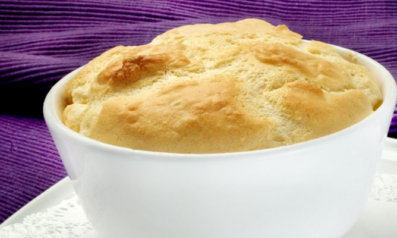

Recetas
Soufflé de jamón y queso
Ingredientes
- 5 claras
- 1 vaso de leche
- 2 cucharadas de harina de maíz refinada
- Mantequilla y harina (para los moldes)
- Perejil (para decorar)
- 100gr de queso
- 2 cucharadas de harina
- 4 lonchas de jamón
- Sal

Preparación
- Tamiza las harinas sobre un bol con ayuda de un colador. Añade la leche y bate con la varilla hasta que esté bien mezclado. Pon a calentar la mezcla en un cazo y sigue batiendo hasta que espese. Incorpora el queso cortado en dados y remueve hasta que se funda. Retira del fuego y deja enfriar. Una vez fría la crema, agrega las yemas y mezcla bien. Reserva.
- Monta las claras a punto de nieve. Sazona. Añade la crema y mezcla con suaves movimientos envolventes. Reserva.
- Unta cuatro moldes con mantequilla y espolvoréalos con harina. Reparte el preparado anterior en los moldes y hornea a 175ºC, durante 20-25 minutos, hasta que se inflen.
- Retira toda la grasa al jamón, trocea y tuéstalo en una sartén caliente.
- Sirve el soufflé en un plato, pon encima el jamón tostado y decora con una hojita de perejil.